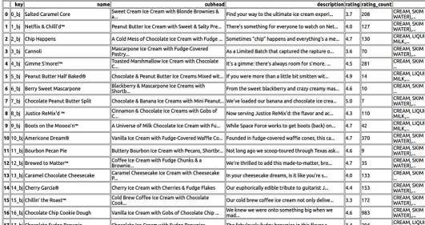

Javascript Yerine Tarayıcıda Python, PyScript
Tarayıcı tarafında kullanılan dil Javascript adlı bir dil, Java'nın daha dinamik, güçlü tipleme gerektirmeyen bir hali denebilir. Bu dil oldukca güçlüdür, müşteri tarafında gereken neredeyse her işlemi, hesabı yapabilir. Önemli nokta, Javascript işlediğinde bu kodları tarayıcı işletilir yani bağlanan kişinin CPU'şu bu kodları işletmektedir, servis tarafı değil.
Peki tarayıcıda başka diller mümkün mü? Farklı dilleri WebAssembly altyapısı üzerinen Javascript'e derlemek mümkün. Fakat PyScript [1] yaklaşımı en temiz, basit, hızlı yöntem, sayfa içinde iki dosya dahil ediliyor, ve bundan sonra tam tekmilli Python kodlarını sayfa içine koymak mümkün oluyor.
Başlangıç
Basit bir kodu altta görüyoruz. Bu sayfada tek bir metin kutusu var,
bir de düğme. Kutuya girilen yazı OK tuşuna basınca aynı sayfa
üzerinde gösterilecek. Kodun gösterdiği kabiliyetler form öğeleri ile
iletişim kurabilme, ve sayfaya bilgi yazabilmek, bunun için DOM
objelerine erişmek, mesela output kimlikli <div> HTML objesi içine
çıktı veriliyor.
<html>
<head>
<link rel="stylesheet" href="https://pyscript.net/latest/pyscript.css"/>
<script defer src="https://pyscript.net/latest/pyscript.js"></script>
</head>
<body>
<div id="output"></div>
<py-script>
def write_to_page():
inp = Element("search")
Element("output").element.innerText = inp.element.value
</py-script>
<p>
<input type="text" name="search" id="search"/>
</p>
<p>
<button py-click="write_to_page()" id="btn1">OK</button>
</p>
</body>
</html>
Test etmek için üstteki kodları mesela bir tst1.html dosyasına yazarız,
ve o dizinde
python -m http.server 8080 --bind 127.0.0.1
komutunu işletiriz, http.server Python içindeki hafif bir Web
servisidir, Flask yapabilirdik o da çok kolay ama üstteki yöntem daha
da basit. Şimdi,
http://localhost:8080/tst1.html
adresini ziyaret ederiz, sayfa yüklenirken pyscript.js yüklenecek,
birkaç saniye alabilir, şöyle bir ekran gösterilir
o sırada, önemli değil, yükleme bitince OK düğmesine tıklanır ve sonuç
görülür.
{kind=link}
Gerekli .js, .css dosyalarını pyscript.net yerine aynı dizinden
servis edebilirdik, bu durumda pyscript.js ve pyscript.css
indirilir, dizine koyulur sayfa kodunun <head> bölümu şöyle
değiştirilir,
<link rel="stylesheet" href="pyscript.css"/>
<script defer src="pyscript.js"></script>
HTML Üretmek
Pyscript kodunda element.innerText çağrısı ile bir metni sayfaya yazabildik.
Eğer HTML gösterilsin istiyorsak, mesela bağlantılar, renkli yazılar, listeler
gibi daha çetrefilli çıktılar için .innerHTML kullanabiliriz.
Bir örnekte görelim, 0 ila 9 arasındaki sayıları gezip URL bağlantılarını dinamik olarak değiştirip sayfaya o şekilde basacağız,
<html>
...
<body>
<div id="output"></div>
<py-script>
def write_to_page():
line = ""
for i in range(10):
s = '<p><a href="https://blah.blah%d.com">Link %d</a></p>' % (i,i)
line = line + s
Element("output").element.innerHTML = line
</py-script>
<p>
<button py-click="write_to_page()" id="btn1">OK</button>
</p>
</body>
</html>
Düğmeye basınca bu kod 10 tane bağlantı üretmeli, Link 0, Link 1 gibi..
Http ile Uzaktaki Dosyayı Okumak, İşlemek
Aynen Javascript ile olduğu gibi PyScript bir dosya servisindeki
(fileserver) bir dosyayı URL ile okuyup işleyebilir. Alttaki örnek
için Flask lazım (basit web servisinde olmuyor), aynı dizinde bir
test1.json dosyası yarattık ve içinde {"a": 1, "b": 2} değerleri
var, dosyayı HTML sayfası ile berabe Flask static dizini içine
koyduk.
<html>
<head>
<link rel="stylesheet" href="pyscript.css"/>
<script defer src="pyscript.js"></script>
</head>
<body>
<py-script>
from pyodide.http import open_url
url = 'http://localhost:5000/static/test1.json'
df = open_url(url)
display(df.getvalue())
</py-script>
</body>
</html>
Sayfayı yükleyince bu değerlerin ekrana basıldığını göreceğiz.
Eğer ham JSON dosyasını indirebiliyorsak bu dosya içeriğini JSON paketi ile işlemek te mümkün olacak muhakkak? Böylece içeriğe bildiğimiz sözlük, liste kavramları ile erisebiliriz, üstteki kodu şöyle değiştirelim,
from pyodide.http import open_url
import json
...
df = open_url(url)
d = json.loads(df.getvalue())
display(d['a'])
Bu kod ekrana sadece 1 değeri basacak.
Web üzerinden dosya erişimi pek çok fayda sağlar, mesela 5-10 MB veri dosyalarını gerektiği yerde indirip içeriklerini ek işlemlere tabi tutmak mümkün.
Karşılaştırma amacıyla aynı işlemi (JSON işleme kısmı yok) Javascript ile yapalım,
<html>
<script>
function doit() {
var xmlHttp = new XMLHttpRequest();
xmlHttp.open( "GET", url = 'http://192.168.43.49:5000/static/test1.json', false );
xmlHttp.send( null );
alert(xmlHttp.responseText);
}
</script>
<body>
<p>
<p><button onclick="doit()">OK</button></p>
</p>
</body>
</html>
Diger Paketler
Fakat kabiliyetler bunlarla sınırlı değil. PyScript taklit bir Python
ortamı değil, tam tekmilli bir Python ortamı. Amacı bildik Python
yorumlayıcısını tamamen Javascript bazlı işletmek. Bu sebeple mesela
dış paket yüklemesi de pek çok paket için işliyor. Mesela altta
pandaş paketinin kurulduğu ve bir CSV verisini işlediği örneği
görüyoruz. Daha fazla örnekler [1]'de bulunabilir.
<html>
<head>
<link rel="stylesheet" href="pyscript.css"/>
<script defer src="pyscript.js"></script>
</head>
<body>
<py-config>
packages = ["pandas"]
</py-config>
<py-script>
import pandas as pd
from pyodide.http import open_url
url = ("https://raw.githubusercontent.com/Cheukting/pyscript-ice-cream/main/bj-products.csv")
ice_data = pd.read_csv(open_url(url))
display(ice_data)
</py-script>
</body>
</html>

Kaynaklar
[1] PyScript, https://docs.pyscript.net/latest/tutorials/getting-started.html
Yukarı